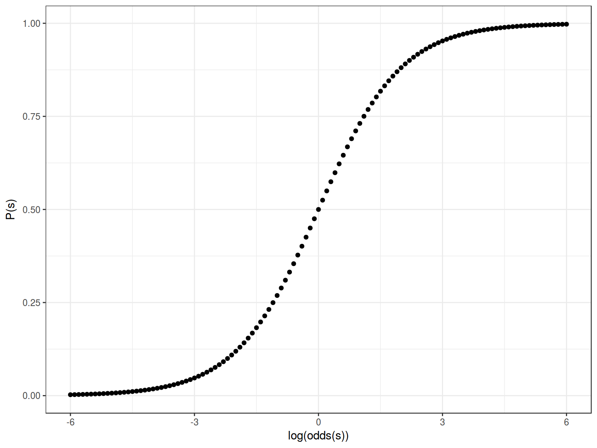
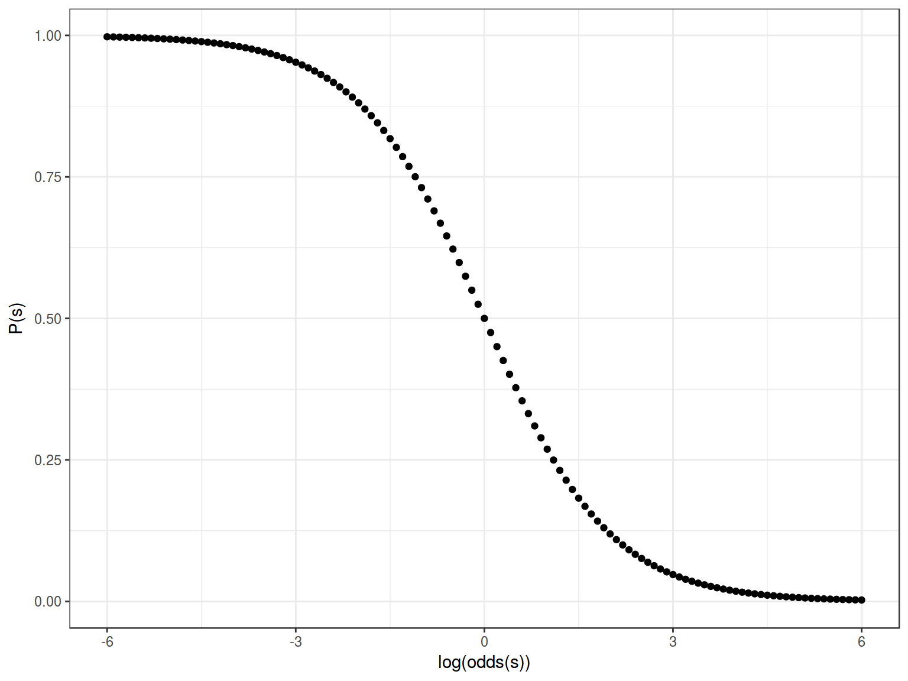
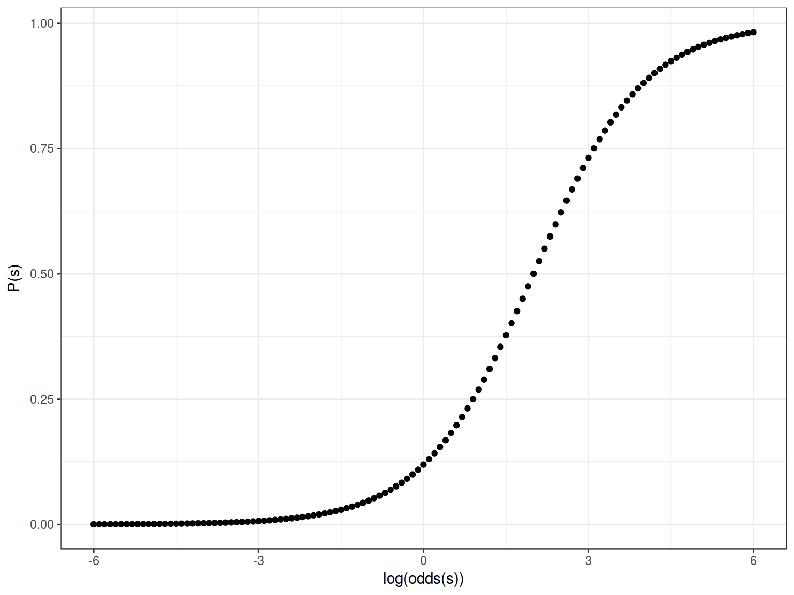
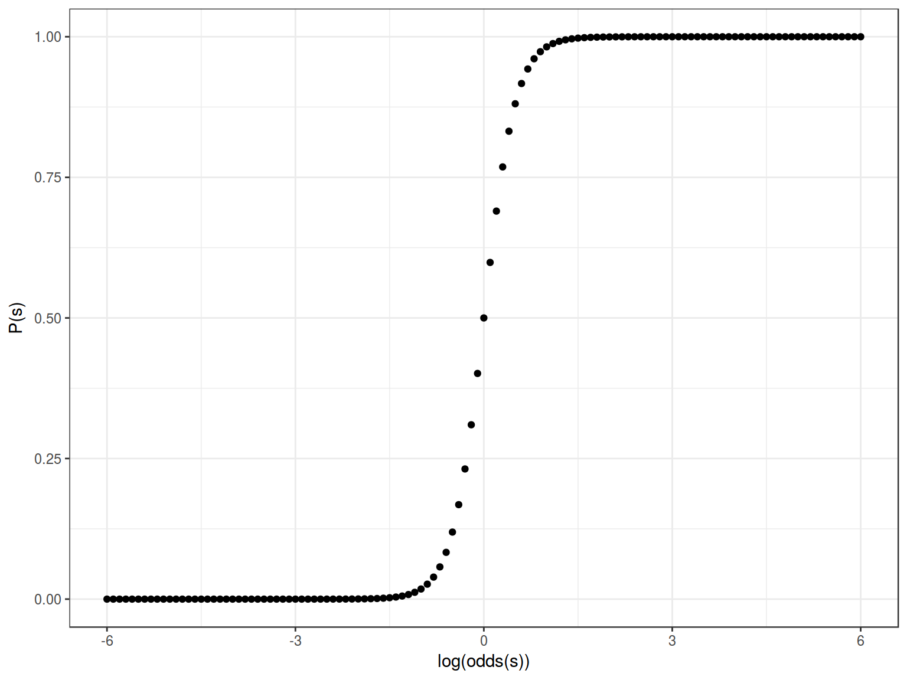
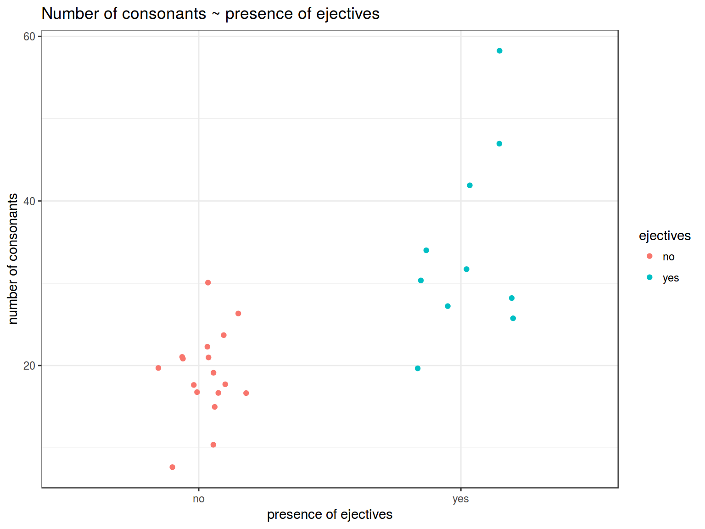
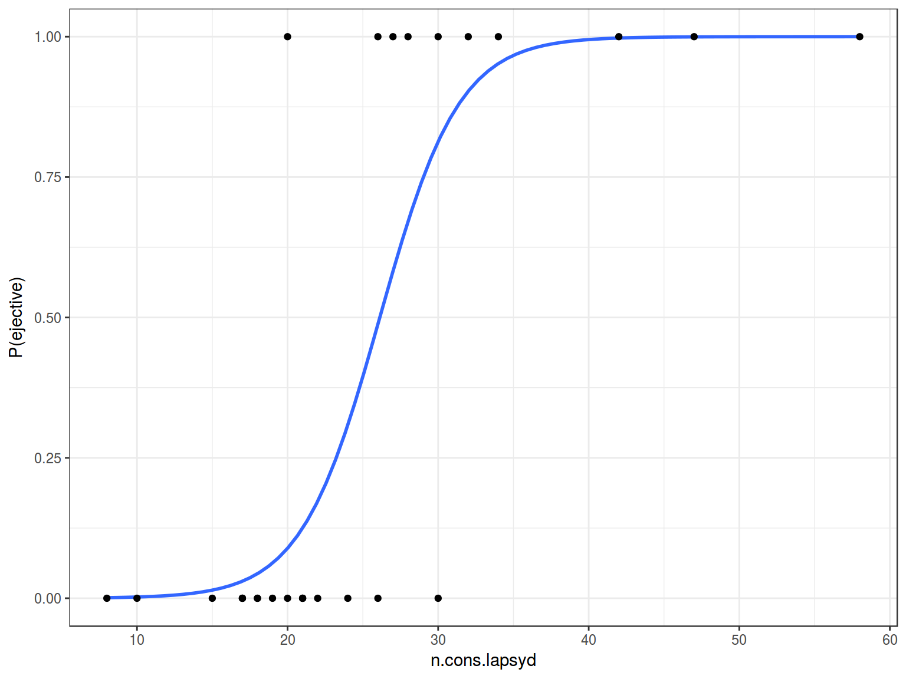
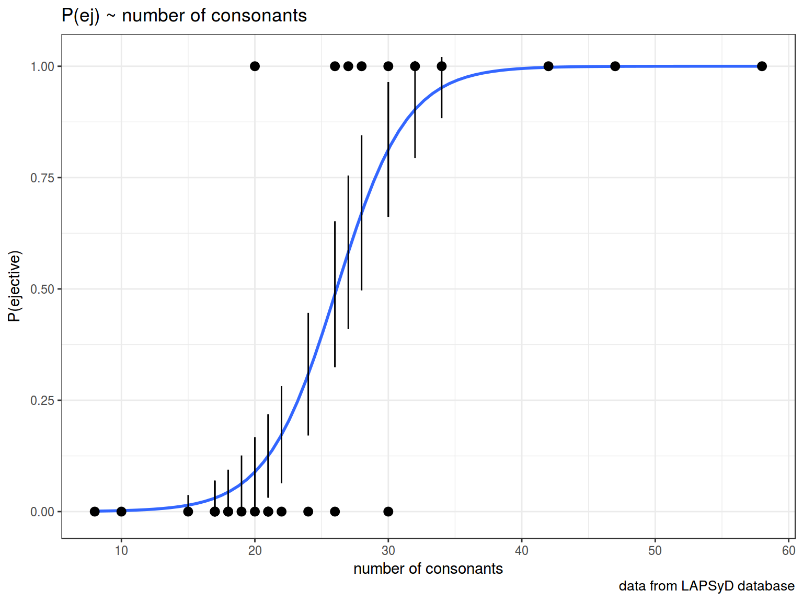

2.1 How it works
Logistic or logit regression was developed in [Cox 1958]. It is a regression model wich predicts binary dependent variable using any number of variables of any type.
What do we need?
\[\underbrace{y_i}_{[-\infty, +\infty]}=\underbrace{\mbox{β}_0+\mbox{β}_1\cdot x_1+\mbox{β}_2\cdot x_2 + \dots +\mbox{β}_k\cdot x_k +\mbox{ε}_i}_{[-\infty, +\infty]}\]
But in our case \(y\) is a binary variable.
\[P(y) = \frac{\mbox{# successes}}{\mbox{# failures} + \mbox{# successes}}; P(y) \in [0, 1]\]
\[odds(y) = \frac{P(y)}{1-P(y)} = \frac{\mbox{P(successes)}}{\mbox{P(failures)}} = \frac{\mbox{# successes}}{\mbox{# failures}}; odds(y) \in [0, +\infty]\]
- Natural logarithm of odds
\[\log(odds(y)) \in [-\infty, +\infty]\]
2.4 Sigmoid

Formula for this sigmoid is the following:
\[y = \frac{1}{1+e^{-x}}\]
Feeting our logistic regression we should be able to reverse our sigmoid:

Formula for this sigmoid is the following:
\[y = \frac{1}{1+e^{-(-x)}} = \frac{1}{1+e^{x}}\]
Feeting our logistic regression we should be able to move center of our sigmoid to the left/right side:

Formula for this sigmoid is the following:
\[y = \frac{1}{1+e^{-(x-2)}}\]
Feeting our logistic regression we should be able to squeeze/stretch center of our sigmoid:

\[y = \frac{1}{1+e^{-4x}}\]
So the more general formula will be: \[y = \frac{1}{1+e^{-k(x-z)}}\]
where
- depending on \(x\) values sigmoid can be reversed
- \(k\) is squeeze/stretch coefficient
- \(z\) is coefficient that indicates movement of the sigmoid center to the left or right side
3.1 Numeric example
It was interesting, whether languages with ejective sounds have in average more consonants. So I collected data from phonological database LAPSyD: http://goo.gl/0btfKa.
ej_cons <- read.csv("http://goo.gl/0btfKa")
ej_cons %>%
ggplot(aes(ejectives, n.cons.lapsyd, color = ejectives))+
geom_jitter(width = 0.2)+
labs(title = "Number of consonants ~ presence of ejectives",
x = "presence of ejectives",
y = "number of consonants")+
theme_bw()

fit1 <- glm(ejectives~1, data = ej_cons, family = "binomial")
summary(fit1)
##
## Call:
## glm(formula = ejectives ~ 1, family = "binomial", data = ej_cons)
##
## Deviance Residuals:
## Min 1Q Median 3Q Max
## -0.9619 -0.9619 -0.9619 1.4094 1.4094
##
## Coefficients:
## Estimate Std. Error z value Pr(>|z|)
## (Intercept) -0.5306 0.3985 -1.331 0.183
##
## (Dispersion parameter for binomial family taken to be 1)
##
## Null deviance: 35.594 on 26 degrees of freedom
## Residual deviance: 35.594 on 26 degrees of freedom
## AIC: 37.594
##
## Number of Fisher Scoring iterations: 4
How we get this estimate value?
##
## no yes
## 17 10
## [1] -0.5306283
What does this model say? This model says that if we have no predictors and take some language it has \(\frac{0.5306283}{(1+e^{-0.5306283})} = 0.3340993\) probability to have ejectives.
- Model with numeric predictor
fit2 <- glm(ejectives~n.cons.lapsyd, data = ej_cons, family = "binomial")
summary(fit2)
##
## Call:
## glm(formula = ejectives ~ n.cons.lapsyd, family = "binomial",
## data = ej_cons)
##
## Deviance Residuals:
## Min 1Q Median 3Q Max
## -1.8317 -0.4742 -0.2481 0.1914 2.1997
##
## Coefficients:
## Estimate Std. Error z value Pr(>|z|)
## (Intercept) -9.9204 3.7699 -2.631 0.0085 **
## n.cons.lapsyd 0.3797 0.1495 2.540 0.0111 *
## ---
## Signif. codes: 0 '***' 0.001 '**' 0.01 '*' 0.05 '.' 0.1 ' ' 1
##
## (Dispersion parameter for binomial family taken to be 1)
##
## Null deviance: 35.594 on 26 degrees of freedom
## Residual deviance: 16.202 on 25 degrees of freedom
## AIC: 20.202
##
## Number of Fisher Scoring iterations: 6
What does this model say? This model says:
\[\log(odds(ej)) = \beta_o + \beta_1 \times n.cons.lapsyd =
-9.9204 + 0.3797 \times n.cons.lapsyd\]
Lets visualize our model:
ej_cons %>%
mutate(`P(ejective)` = as.numeric(ejectives) - 1) %>%
ggplot(aes(x = n.cons.lapsyd, y = `P(ejective)`))+
geom_smooth(method = "glm", method.args = list(family = "binomial"), se = FALSE) +
geom_point()+
theme_bw()

So probability for a language that have 30 consonants will be \[\log(odds(ej)) = -9.9204 + 0.3797 \times 30 = 1.4706\]
\[P(ej) = \frac{1.47061}{1+1.4706}=0.8131486\]
4. predict()
Do we really need to remember all this formulae?
new.df <- data.frame(n.cons.lapsyd = c(30, 55, 34, 10))
predict(fit2, new.df) # odds
## 1 2 3 4
## 1.470850 10.963579 2.989686 -6.123334
predict(fit2, new.df, type = "response") # probabilities
## 1 2 3 4
## 0.813186486 0.999982679 0.952106011 0.002186347
predict(fit2, new.df, type = "response", se.fit = TRUE) # probabilities and confidense interval
## $fit
## 1 2 3 4
## 0.813186486 0.999982679 0.952106011 0.002186347
##
## $se.fit
## 1 2 3 4
## 1.512886e-01 7.882842e-05 6.869366e-02 5.038557e-03
##
## $residual.scale
## [1] 1
So we actually can create a plot with confidense intervals.
ej_cons_ci <- cbind.data.frame(ej_cons, predict(fit2, ej_cons, type = "response", se.fit = TRUE)[1:2])
ej_cons_ci
| Turkish |
24 |
no |
0.3084436 |
0.1376976 |
| Korean |
21 |
no |
0.1249319 |
0.0935836 |
| Tiwi |
21 |
no |
0.1249319 |
0.0935836 |
| Kpelle |
22 |
no |
0.1726696 |
0.1090491 |
| Tulu |
21 |
no |
0.1249319 |
0.0935836 |
| Mapudungun |
20 |
no |
0.0889728 |
0.0780648 |
| Kiowa |
19 |
no |
0.0626231 |
0.0634145 |
| Guarani |
18 |
no |
0.0437026 |
0.0503461 |
| Japanese |
15 |
no |
0.0144175 |
0.0227888 |
| Batak |
17 |
no |
0.0303138 |
0.0392188 |
| Yoruba |
18 |
no |
0.0437026 |
0.0503461 |
| Finnish |
17 |
no |
0.0303138 |
0.0392188 |
| Kayardild |
17 |
no |
0.0303138 |
0.0392188 |
| Hawaiian |
8 |
no |
0.0010243 |
0.0026588 |
| Maori |
10 |
no |
0.0021863 |
0.0050386 |
| Hungarian |
26 |
no |
0.4880055 |
0.1637595 |
| Kannada |
30 |
no |
0.8131865 |
0.1512886 |
| Georgean |
28 |
yes |
0.6707173 |
0.1740778 |
| Ingush |
34 |
yes |
0.9521060 |
0.0686937 |
| Abkhaz |
58 |
yes |
0.9999945 |
0.0000277 |
| Amharic |
32 |
yes |
0.9029348 |
0.1088031 |
| Sandawe |
47 |
yes |
0.9996389 |
0.0012168 |
| Tlingit |
42 |
yes |
0.9975940 |
0.0063371 |
| Lakota |
30 |
yes |
0.8131865 |
0.1512886 |
| Yucatec |
20 |
yes |
0.0889728 |
0.0780648 |
| Aymara |
27 |
yes |
0.5821783 |
0.1725265 |
| Pomo |
26 |
yes |
0.4880055 |
0.1637595 |
ej_cons_ci %>%
mutate(`P(ejective)` = as.numeric(ejectives) - 1) %>%
ggplot(aes(x = n.cons.lapsyd, y = `P(ejective)`))+
geom_smooth(method = "glm", method.args = list(family = "binomial"), se = FALSE)+
geom_point() +
geom_pointrange(aes(x = n.cons.lapsyd, ymin = fit - se.fit, ymax = fit + se.fit))+
labs(title = "P(ej) ~ number of consonants",
x = "number of consonants",
caption = "data from LAPSyD database")+
theme_bw()
